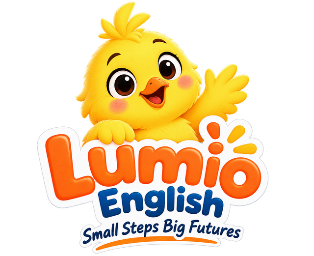

Speak Like a Storyteller: The Music of English
The 60 minutes
| Min | Stage | Method |
|---|---|---|
| 0–5 | Warm-up: Robot or Storyteller? | Contrast listening hook (perception before production) |
| 5–15 | Linguistics Corner: Find the Beat | Rhythm tapping (kinesthetic) + discovery of content vs function words + telegram test |
| 15–23 | Weak Forms Lab: Make the Small Words Small | Explicit pronunciation instruction + listen-and-decide + choral drilling (back-chaining) |
| 23–30 | Arabic Bridge: You Already Link in Arabic | Contrastive analysis (positive transfer from Arabic phonology; awareness of pausing from Quran recitation) |
| 30–40 | Link and Pause: Smooth Speech Workshop | Marking a script (visual prosody) + mirror reading + minimal pause pairs |
| 40–53 | Dramatic Reading and Podcast: A Day to Remember | Script marking + rehearsal + recording (podcast style) + peer assessment with a rubric |
| 53–60 | Exit Ticket, Did You Know? and Goodbye | Formative check + curiosity close + celebration of the strand |
Objectives
| I can find the content words in a sentence and make them strong. | أستطيع أن أجد كلمات المحتوى في الجملة وأنطقها بقوة. |
| I can say weak forms: was /wəz/, were /wɚ/, to /tə/, and /ən/, of /əv/, and know when they become strong. | أستطيع أن أنطق الصيغ الضعيفة: was /wəz/ و were /wɚ/ و to /tə/ و and /ən/ و of /əv/، وأعرف متى تصبح قوية. |
| I can link words (woke_up, lots_of) and pause in thought groups. | أستطيع أن أصل الكلمات (woke_up, lots_of) وأتوقف بين مجموعات المعنى. |
| I can read a short story dramatically, with stress, pauses and feeling. | أستطيع أن أقرأ قصة قصيرة بأسلوب درامي، بالنبر والوقفات والإحساس. |
Builds on
- Bonus Classes 1-3: -ed sounds, the story mountain, background and events
- Lesson 14: the party (guests, lanterns, balloons, decorations, invitation, gifts, sweets)
- Lesson 15: a day to remember (woke up, got ready, left, celebrated, remembered, memory, tradition, anniversary)
- Lesson 16: while + past continuous (was texting, were watching, whispering, giggling, daydreaming)
Skill focus
pronunciation, prosody, fluency, speaking, linguistics
Linguistics Corner — English is music: beats, weak words and links · الإنجليزية موسيقى: إيقاع وكلمات ضعيفة ووصل
| English is often called a stress-timed language: the strong (stressed) syllables tend to come at fairly regular beats, and the weak syllables between them are squeezed to fit. Try it: 'CATS CHASE MICE' / 'the CATS have CHASED the MICE' / 'the CATS will have CHASED the MICE' all have three beats, and we say the longer ones faster to keep a similar rhythm. (Measurements show the beats are only roughly regular.) | تُوصف الإنجليزية غالباً بأنها لغة «إيقاعها قائم على النبر»: المقاطع القوية تميل إلى المجيء على نبضات شبه منتظمة، والمقاطع الضعيفة بينها تُضغط لتتسع. جرّب: في كل جملة من الجمل الثلاث ثلاث نبضات، ونقول الجمل الأطول بسرعة أكبر لنحافظ على إيقاع متقارب (والقياسات تُظهر أن هذا الانتظام تقريبي فقط). |
| Linguists used to put every language in one of two boxes: stress-timed (like English) or syllable-timed (like Spanish or French). Measurements showed it is more of a scale than two boxes. Arabic was traditionally put in the stress-timed box with English, and many studies still place it near English, although dialects differ. So the beat is probably not the main problem for Arabic speakers. | كان اللغويون يضعون كل لغة في أحد صندوقين: قائمة على النبر (مثل الإنجليزية) أو قائمة على المقطع (مثل الإسبانية أو الفرنسية). لكن القياسات أظهرت أنه مقياس متدرج أكثر منه صندوقين. وقد وُضعت العربية تقليدياً مع الإنجليزية في صندوق النبر، وما زالت دراسات كثيرة تضعها قريبة منها، مع اختلاف بين اللهجات. فالإيقاع على الأرجح ليس المشكلة الكبرى لمتحدثي العربية. |
| The real difference is the small words. English makes function words very short and changes their vowel to schwa /ə/: was = /wəz/, to = /tə/, and = /ən/, of = /əv/, a = /ə/. Arabic speakers often say every small word with a full, clear vowel and pronounce every letter, so their English can sound heavy and slow. | الفرق الحقيقي في الكلمات الصغيرة. الإنجليزية تختصر الكلمات الوظيفية جداً وتحوّل حركتها إلى /ə/. أما متحدثو العربية فكثيراً ما ينطقون كل كلمة صغيرة بحركة كاملة واضحة وكل حرف فيها، فتبدو إنجليزيتهم ثقيلة وبطيئة. |
| Schwa /ə/ is the most common vowel sound in English, and it can be spelled with any vowel letter: about (a), taken (e), pencil (i), today (o), supply (u). It is never stressed. | الشوا /ə/ هو أكثر صوت متحرك شيوعاً في الإنجليزية، ويمكن أن يُكتب بأي حرف متحرك: about و taken و pencil و today و supply. ولا يكون منبوراً أبداً. |
| The telegram test: content words carry the message. 'PARTY... AMAZING... HUGE CAKE... HUNDRED BALLOONS' still makes sense. 'the... was... a... of...' means nothing. That is why English listeners pay most attention to the strong words. | اختبار البرقية: كلمات المحتوى تحمل الرسالة. «حفلة... مذهلة... كعكة ضخمة... مئة بالون» ما زالت مفهومة، أما «the... was... a... of...» فلا تعني شيئاً. ولهذا يركّز المستمع الإنجليزي أكثر على الكلمات القوية. |
| Weak words become strong when they are important or at the end: 'Was it fun?' /wəz/ - 'Yes, it WAS!' /wʌz/ (British /wɒz/). 'Who were you talking TO?' /tuː/. | تصبح الكلمات الضعيفة قوية عندما تكون مهمة أو في آخر الجملة: Yes, it WAS! و Who were you talking TO? |
| Linking: when a word ends in a consonant and the next starts with a vowel, English joins them: woke_up = 'wo-kup', lots_of = 'lot-səv', an_hour = 'a-nour'. Pausing matters too: 'Let's eat, Grandma!' and 'Let's eat Grandma!' differ by one pause. | الوصل: عندما تنتهي كلمة بصوت ساكن وتبدأ التالية بصوت متحرك، تصلهما الإنجليزية: woke_up تُسمع wo-kup. والوقف مهم أيضاً: «لنأكل يا جدتي!» و«لنأكل جدتي!» يختلفان بوقفة واحدة. |
Key terms
| Term | بالعربية | Meaning |
|---|---|---|
| stress | النبر | Saying a syllable or word stronger: louder, longer and higher. PAR-ty, bal-LOON. |
| content word | كلمة محتوى | A word that carries the meaning: nouns, main verbs, adjectives, adverbs, question words, negatives (didn't). |
| function word | كلمة وظيفية | A small grammar word: a, the, to, and, of, was, were, at, for, can. |
| weak form | الصيغة الضعيفة | The short, quiet way to say a function word: was = /wəz/. |
| schwa /ə/ | الشوا: صوت مختصر محايد | The short, relaxed 'uh' sound. The most common vowel sound in English: about, the, was, to. |
| linking | الوصل | Joining the end of one word to the start of the next: picked_up sounds like 'pick-tup'. |
| thought group | مجموعة المعنى | A group of words said together between two short pauses. |
Arabic Bridge
| English | العربية | What to notice |
|---|---|---|
| picked_up → 'pick-tup' (linking) | في البيت → «فِلْبيت» / الشمس → «اَشّمس» | Arabic already links and blends in connected speech: همزة الوصل disappears in the middle of speech, and the sun letters swallow the l of ال. You do this every day in Arabic; now do it in English. العربية تصل وتدمج أيضاً في الكلام المتصل: همزة الوصل تسقط في درج الكلام، والحروف الشمسية تُدغم لام «ال». أنت تفعل هذا كل يوم بالعربية، فافعله بالإنجليزية. |
| pausing in thought groups | الوقف والابتداء في تلاوة القرآن الكريم | Many students know that in reciting the Holy Quran there is a whole science of where to stop and where to start again (الوقف والابتداء), because stopping in the wrong place can change the meaning. The lesson for English is simple and separate: where you pause matters for meaning, so English storytellers plan their pauses too (before the climax, after a time phrase, at commas). يعرف كثير من الطلاب أن لتلاوة القرآن الكريم علماً خاصاً بمواضع الوقف والابتداء، لأن الوقف في غير موضعه قد يغيّر المعنى. والدرس في الإنجليزية بسيط ومستقل: مكان الوقفة يؤثر في المعنى، لذلك يخطط الراوي الإنجليزي لوقفاته أيضاً (قبل الذروة، وبعد عبارة الزمن، وعند الفواصل). |
| was /wəz/, to /tə/, and /ən/ | في، مِن، و — حركات قصيرة لكن واضحة | Arabic small words are short, but they keep a clear vowel: في is fi (or fil- before ال), من is min. English small words usually change their vowel to /ə/. This is new for Arabic speakers, so we train it. الكلمات الصغيرة في العربية قصيرة لكنها تحتفظ بحركة واضحة: «في» تُنطق fi (أو fil- قبل «ال»)، و«من» تُنطق min. أما الكلمات الصغيرة في الإنجليزية فتتحول حركتها عادةً إلى /ə/. هذا جديد على متحدثي العربية فنتدرّب عليه. |
| CEL-e-brate, dec-o-RA-tion, bal-LOON | مَدْرَسة، مَكْتَبة: للكلمات العربية نبر أيضاً | Arabic words also have a stressed syllable, so the idea is not new (which syllable is stressed can differ between Arabic dialects). The English challenge is that stress is not shown in spelling and can move: CELebrate but celeBRAtion. Learn the stress with the word. للكلمات العربية مقطع منبور أيضاً، فالفكرة ليست جديدة (وقد يختلف موضع النبر بين اللهجات العربية). الصعوبة في الإنجليزية أن النبر لا يظهر في الكتابة وقد ينتقل: CELebrate لكن celeBRAtion. تعلّم النبر مع الكلمة. |
Common errors of Arabic speakers
| Student says | Correct | Why |
|---|---|---|
| I WAS AT THE PAR-TY. (every word equally strong) | I was at the PARty. (/aɪ wəz ət ðə ˈpɑːrt̬i/) | Giving every word a full vowel and equal strength. Only content words are strong. |
| /wʌz/ (British /wɒz/) in the middle: 'It WAS amazing' | It was (/wəz/) aMAZing. | Reading 'was' as it is spelled, with a full vowel. In the middle of a sentence it is weak. |
| I went /tuː/ the party and /ænd/ ate lots /ʌv/ cake. | I went /tə/ the party /ən/ ate lots /əv/ cake. | Full forms of to, and, of make speech slow and heavy. |
| woke | up, picked | up (a stop between the words) | wo-kup, pick-tup | Each word is said separately, as a separate unit. English links consonant + vowel across words. |
| BALloon, celeBRATE, deCOration | balLOON, CELebrate, decoRAtion | English stress is not written; it must be learned with each word. |
| A flat voice at the climax, or a pause after every word. | Pause before 'Suddenly...', speed up in the action, slow down for the feeling. | Reading word by word, not in thought groups. |
Teacher needs
- Bonus Class 4 slides
- A metronome app or a pen to tap the beat
- Noor's story 'A Day to Remember' marked with CAPS (stress), // (pauses) and _ (links)
- A simple rubric slide: Beat - Weak words - Links - Pauses - Feeling
Students need at home
- Paper and a pencil
- The scene they wrote in Bonus Class 3 (optional)
- Phone or laptop to record their dramatic reading
1. Warm-up: Robot or Storyteller?
0–5 min“Listen to two readers. Reader 1 (robot voice): 'I. WAS. AT. THE. PAR. TY. AND. THERE. WERE. LOTS. OF. BAL. LOONS.'”
“Reader 2 (storyteller): 'I was at the PARty, and there were LOTS of balLOONS!'”
“Which one sounds more natural? Which one would you listen to for 10 minutes? Why?”
“Today you become storytellers. We study the music of English: beats, weak words, links and pauses.”
- استمعوا لقارئين: روبوت وراوٍ. أيهما يبدو طبيعياً أكثر؟ ولماذا؟
- اليوم ندرس موسيقى الإنجليزية: الإيقاع والكلمات الضعيفة والوصل والوقف.
- Listen and vote: Reader 1 or Reader 2.
- Say one reason (faster, smoother, some words stronger...).
- Try the sentence once both ways for fun.
- Exaggerate the robot; teens enjoy it and remember the contrast.
- Collect their reasons on the slide: they are the plan for the class.
2. Linguistics Corner: Find the Beat
5–15 min“Tap the table with me: CATS - CHASE - MICE. Three taps. Now: the CATS have CHASED the MICE. Still three taps! The small words squeeze in between. Now: the CATS will have CHASED the MICE. Three taps again!”
“English puts the beat on the important words: nouns, main verbs, adjectives, adverbs, question words and didn't. These are content words. The small grammar words are function words: they hide between the beats.”
“Telegram test: if a message costs money per word, what do you send? 'PARTY GREAT. HUGE CAKE.' The content words!”
“Some people think Arabic and English have very different beats. In fact, many linguists put Arabic close to English here. So your beat is probably fine: the secret is making the small words small.”
“Also learn the stress inside words: CELebrate, but celeBRAtion. balLOON. decoRAtion. anniVERsary.”
- انقروا معي: ثلاث نقرات في كل جملة، والكلمات الصغيرة تُضغط بينها.
- النبر على كلمات المحتوى: الأسماء والأفعال الرئيسية والصفات والظروف وأدوات الاستفهام و didn't.
- كثير من اللغويين يرون الإيقاع العربي قريباً من الإنجليزي، والسر هو أن تجعل الكلمات الصغيرة صغيرة.
- Tap the three cats sentences and feel the squeeze.
- Write the telegram version of two party sentences.
- Find and capitalize the stressed words in the exercise, then read with taps.
- There were balloons and lanterns everywhere. → balLOONS, LANterns, EVerywhere
- We were waiting for the guests. → WAITing, GUESTS
- My cousin brought a huge cake. → COUsin, BROUGHT, HUGE, CAKE
- It was the best party of the year. → BEST, PARty, YEAR
- I was texting my friend when the lights went out. → TEXTing, FRIEND, LIGHTS, WENT, OUT
- Everyone was laughing and giggling. → EVeryone, LAUGHing, GIGgling
- We celebrated my grandparents' anniversary. → CELebrated, GRANDparents', anniVERsary
- I didn't want to leave. → DIDn't, WANT, LEAVE
- Item 5: 'out' is stressed in 'went out' (a phrasal verb particle); good discussion point for strong students.
- Item 8: negatives are content words; 'didn't' is strong because it changes the meaning.
- Tapping keeps the rhythm physical; do not explain more than needed.
3. Weak Forms Lab: Make the Small Words Small
15–23 min“Meet the laziest sound in English: schwa, /ə/. Open your mouth a little, relax everything, and say 'uh'. It is the most common vowel sound in English!”
“was in a sentence: /wəz/. 'It was amazing.' to: /tə/. 'We went to the party.' and: /ən/. 'cake and sweets'. of: /əv/. 'lots of guests'.”
“Back-chain with me: guests... of guests... lots of guests... there were lots of guests.”
“But! At the end, or for emphasis, the word wakes up: 'Was it fun?' 'Yes, it WAS!' /wʌz/. 'Where are you FROM?'”
“Listen and decide: weak or strong?”
- تعرّفوا على أكسل صوت في الإنجليزية: الشوا /ə/. افتح فمك قليلاً واسترخِ وقل «أَه» قصيرة.
- في آخر الجملة أو عند التأكيد تستيقظ الكلمة وتصبح قوية.
- Say schwa and the weak forms in chorus, then alone.
- Back-chain three party sentences.
- Decide weak or strong for each word in brackets and read the sentence aloud.
- The party [was] amazing. → weak /wəz/
- Was it fun? Yes, it [was]! → strong /wʌz/ (British /wɒz/) (end of sentence)
- We [were] waiting for an hour. → weak /wɚ/
- I went [to] the celebration. → weak /tə/
- Who were you talking [to]? → strong /tuː/ (end of sentence)
- There were lots [of] sweets. → weak /əv/
- We had cake [and] juice. → weak /ən/
- I can't dance, but my sister [can]. → strong /kæn/ (end of sentence)
- Where did the guests come [from]? → strong /frʌm/ (British /frɒm/) (end of sentence)
- Do not make the weak forms sound lazy or wrong: native speakers of every accent use them; they are correct English.
- British forms are equally fine: weak were /wə/, strong was /wɒz/, strong from /frɒm/.
4. Arabic Bridge: You Already Link in Arabic
23–30 min“Say this in Arabic: في البيت. Do you say 'fi al-bayt'? No! You say 'fil-bayt'. The hamzat al-wasl disappears and the words join. That is linking!”
“Now الشمس. Not 'al-shams', but 'ash-shams'. The l is swallowed by the next sound. English does similar things in fast speech.”
“Some of you know that in reciting the Holy Quran there are careful rules about where to stop (الوقف), because a stop in the wrong place can change the meaning. In English too, where you pause matters for meaning.”
“What is new? In Arabic, small words like في keep a clear vowel. In English, small words usually weaken their vowel: was becomes /wəz/. That is the one new habit to build.”
“And word stress: Arabic words have stress too, like مَدْرَسة. English stress is just not written, so learn it with the word: CELebrate, celeBRAtion.”
- «في البيت» ننطقها «فِلْبيت»: هذا وصل! و«الشمس» ننطقها «اَشّمس»: اللام تُدغم. أنتم تفعلون هذا كل يوم.
- يعرف بعضكم أن لتلاوة القرآن الكريم أحكاماً دقيقة في مواضع الوقف، لأن الوقف في غير موضعه قد يغيّر المعنى. وفي الإنجليزية أيضاً يؤثر مكان الوقفة في المعنى.
- الجديد الأهم: الكلمات الصغيرة في الإنجليزية تفقد حركتها وتصبح /ə/.
- Say في البيت، من المدرسة، الشمس naturally and notice the joining.
- Compare with English: in the evening, lots of guests, woke up.
- Tell a partner in one sentence: what is the same and what is new?
- Mention the Quran reference briefly and with respect, as a point of knowledge some students already have; never use verses as practice material and never compare recitation to entertainment. Not every student has studied tajweed.
- Avoid claiming Arabic is 'syllable-timed'; the honest point is the full vowels in small words.
5. Link and Pause: Smooth Speech Workshop
30–40 min“Rule: consonant at the end + vowel at the start = join them. woke_up: 'wo-kup'. lots_of: 'lot-səv'. an_hour: 'a-nour', because the h is silent!”
“Mark the links with a little smile line _ and then read.”
“Now pauses. Listen: 'Let's eat, Grandma!' and 'Let's eat Grandma!' One pause saves Grandma!”
“Storytellers pause after the time phrase, at commas, and BEFORE the surprise: 'I opened the door // and... // SURPRISE!'”
- ساكن في آخر الكلمة + متحرك في أول التالية = صِلهما.
- الراوي يتوقف بعد عبارة الزمن، وعند الفواصل، وقبل المفاجأة.
- Mark the links in 8 phrases and say them smoothly.
- Mark pauses (//) in two sentences and read them.
- Pause pairs: say 'Let's eat, Grandma!' and 'Let's eat Grandma!'; the group guesses which one.
- woke up → woke_up → 'wo-kup'
- got up early → got_up_early → 'go-tu-pearly'
- lots of balloons → lots_of → 'lot-səv balloons'
- an hour → an_hour → 'a-nour' (silent h)
- picked up the gifts → picked_up → 'pick-tup'
- came in → came_in → 'cay-min'
- left at eight → left_at_eight → 'lef-ta-teight'
- full of guests → full_of → 'fu-ləv guests'
- Mark the pauses: When I woke up the house was quiet and everyone was sleeping. → When I woke up // the house was quiet // and everyone was sleeping.
- Mark the pauses: Suddenly the lights went out and somebody whispered my name. → Suddenly // the lights went out // and somebody whispered my name.
- Use 'picked_up' to recycle the /t/ sound of -ed from Bonus Class 1: the t jumps to the next word.
- Pause positions can vary a little; accept any pause that keeps meaning groups together.
6. Dramatic Reading and Podcast: A Day to Remember
40–53 min“Here is Noor's story, 'A Day to Remember'. Your job: be the storyteller. First, mark the script: CAPS for strong words, // for pauses, _ for links.”
“Remember the story mountain: speak slowly and calmly at the setting, faster in the rising action, PAUSE before the climax, and slow down for the feeling at the end.”
“Rehearse twice with a partner. Then record yourself, or perform live. Listeners use the rubric: Beat, Weak words, Links, Pauses, Feeling. One star for each.”
“Bonus: perform your own scene from Bonus Class 3 instead!”
- علّم النص: حروف كبيرة للكلمات القوية، // للوقف، _ للوصل.
- تذكّر جبل القصة: هدوء في البداية، سرعة في تصاعد الأحداث، وقفة قبل الذروة، وبطء عند الشعور في النهاية.
- المستمعون يقيّمون: الإيقاع، الكلمات الضعيفة، الوصل، الوقف، الإحساس.
- Mark the six lines of the script.
- Rehearse in pairs (breakout rooms) and give one tip to each other.
- Record or perform the story (about 45 seconds).
- Score a classmate with the 5-star rubric and say one star and one wish.
- Last Friday was a day to remember. → LAST FRIday // was a DAY to reMEMber. (was /wəz/, to /tə/)
- When I woke up, the house was quiet. → When I WOKE_UP // the HOUSE was QUIet.
- Mom was cooking and my brothers were whispering in the garden. → MOM was COOKing // and my BROthers were WHISpering_in the GARden. (and /ən/, were /wɚ/)
- Nobody said 'Happy birthday', and I was so disappointed. → NObody SAID 'HAPpy BIRTHday' // and I was SO disapPOINTed.
- In the evening, I opened the door and... surprise! → In the EVEning // I OPened the DOOR_and... // surPRISE!
- There were lots of balloons, lanterns and a huge cake. It was the best memory of my life. → There were LOTS_of balLOONS // LANterns_and a HUGE CAKE. // It was the BEST MEMory_of my LIFE.
- Accept small differences in marking; the key is strong content words, weak function words and a pause before 'surprise'.
- Recording lets students hear themselves: ask them to listen once only for 'was' and 'and'.
- Give feedback on prosody only; grammar is not the target today.
7. Exit Ticket, Did You Know? and Goodbye
53–60 min“Exit ticket: five quick items in the chat.”
“Did you know? Many actors and news readers mark their scripts exactly as you did today: strong words, pauses and breaths. And in many languages, storytellers use rhythm and pauses to keep listeners hooked, from Shahrazad to podcasts.”
“You are now Story Scientists: you know the sounds of the past, the shape of a story, the two cameras, and the music of English. Well done!”
- هل تعلم؟ كثير من الممثلين ومذيعي الأخبار يعلّمون نصوصهم تماماً كما فعلتم اليوم.
- أصبحتم علماء حكاية: تعرفون أصوات الماضي، وشكل القصة، والكاميرتين، وموسيقى الإنجليزية. أحسنتم!
- Answer the 5 exit-ticket items.
- Say the story's first line one last time, like a storyteller.
- Play two or three recordings (with permission) as a celebration.
- Students who still read word by word: give them the homework recording task with a partner at home.
Exit ticket
- Which words are strong? 'We were watching a movie at home.' → WATCHing, MOVie, HOME
- How do we usually say 'was' in 'It was amazing'? → /wəz/ (weak, with schwa)
- Weak or strong: 'Yes, I [was].' → strong /wʌz/ (British /wɒz/) (end of sentence)
- How does 'woke up' sound when linked? → 'wo-kup'
- Where does the stress go? celebrate / celebration → CELebrate / celeBRAtion
Homework
Storyteller Podcast: record a 60-second story about a day you remember (a party, a trip, a celebration). Mark your script first (CAPS, //, _). Use was/were + -ing for the background, past simple for events, and a pause before the climax. Listen back and write down two things you did well and one thing to improve.
بودكاست الراوي: سجّل قصة مدتها 60 ثانية عن يوم لا تنساه (حفلة أو رحلة أو احتفال). علّم نصك أولاً (حروف كبيرة، //، _). استخدم was/were + -ing للخلفية والماضي البسيط للأحداث، وتوقف قبل الذروة. استمع للتسجيل واكتب شيئين أتقنتهما وشيئاً واحداً تريد تحسينه.
- Write and mark the script (60 seconds of speech, about 100-120 words).
- Record the podcast and send it in the Teams chat.
- Self-check with the rubric: Beat - Weak words - Links - Pauses - Feeling.
Support
- Focus on only two weak forms (was and and) and one link per sentence.
- Give a pre-marked script and let the student read along with the teacher (shadowing) before reading alone.
- Tap the beat on the table while reading to keep the rhythm.
Challenge
- Try the three cats sentences at speed and explain stress-timing to the group.
- Use contrastive stress to change meaning: 'I didn't eat the CAKE' (I ate something else) vs 'I didn't EAT the cake' (I did something else with it).
- Find schwa in 10 words from Lessons 14-16 (balloon, decoration, celebration, invitation...).
Success criteria
- Identifies the content words in at least 6 of 8 sentences.
- Uses weak forms of was, to, and, of in connected speech, and the strong form at the end of a sentence.
- Links at least 6 of 8 consonant-vowel phrases smoothly.
- Performs the dramatic reading with a clear pause before the climax and at least 3 stars on the rubric.
Watch for
- Equal stress on every word
- Full /wʌz/, /tuː/, /ænd/ in the middle of sentences
- Stops between words instead of linking
- Wrong word stress (BALloon, celeBRATE)
- Reading word by word without thought groups
Teacher notes
- This class is about how English sounds, not new grammar: every sentence uses language from Lessons 1-16 and Bonus Classes 1-3.
- Be careful with rhythm claims: do not say Arabic is syllable-timed. Research is mixed and often places Arabic near English. The practical, honest point is full vowels in small words.
- Weak forms are correct, standard English, not 'lazy' speech. Students who use them sound more fluent and are easier to understand.
- This class closes the Story Science strand. The homework podcast is a good piece of evidence for the level portfolio and the Big Review in Lesson 20.